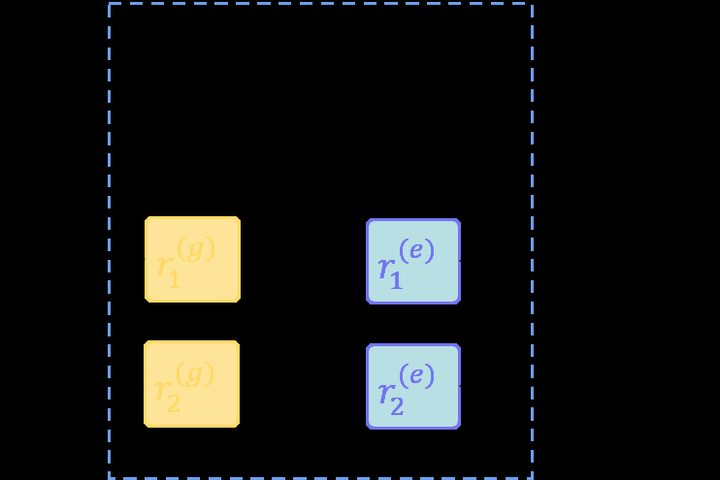
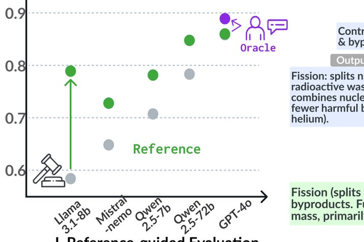
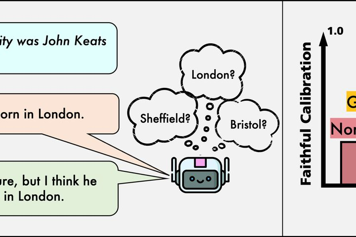
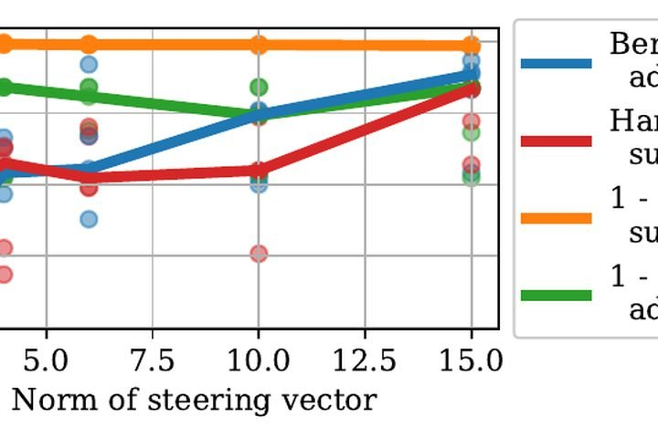
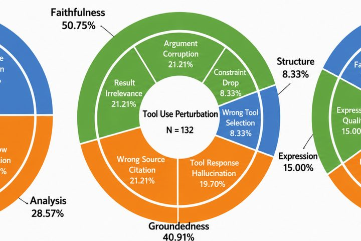
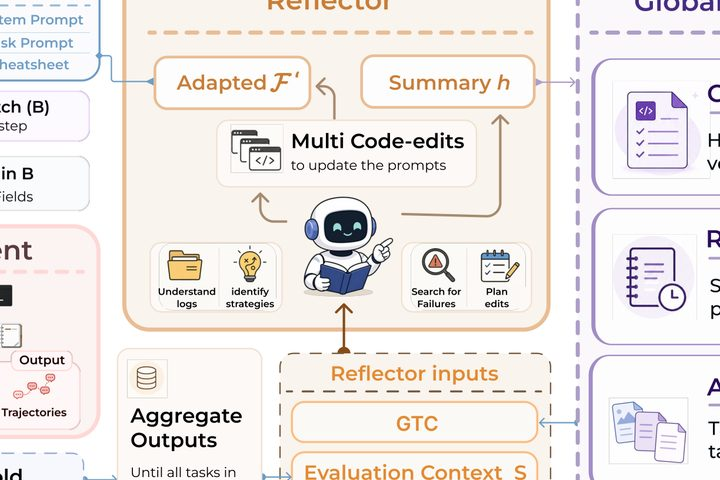
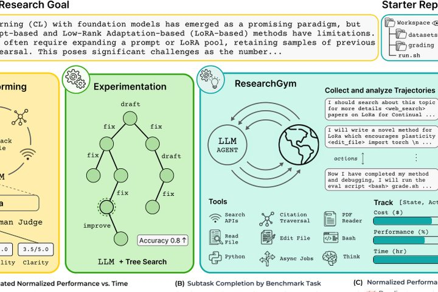
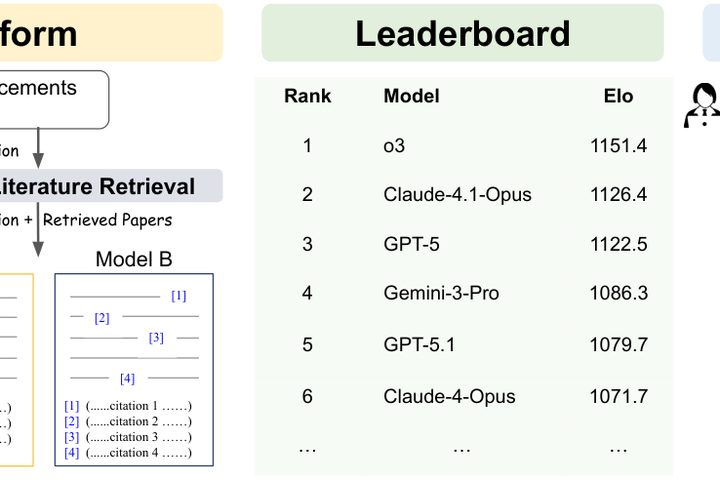

About
I am an Assistant Professor in the Department of Computer Science at Yale University, where I lead the Yale NLP Lab. I'm also a Faculty Research Scientist at the Allen Institute for AI (Ai2).
My research spans problems at the intersection of NLP and machine learning, including large language models, representation learning, retrieval and knowledge-intensive systems, and applications in specialized domains. Currently, I am particularly interested in developing reasoning systems for knowledge-intensive and specialized environments, and my lab builds LLM-based systems that help scientists and other domain experts. I am also interested in the reliability and interpretability of AI systems.
For current areas of focus, the research group, and Ph.D. student openings, please visit the lab website and its opportunities page.
Research
My group builds language models that can be trusted with expert work. That means extending what models can do, knowing when to believe them, and how they can help in scientific research. For recent publications, see my Google Scholar page.
Training and evaluating language models in hard-to-verify domains
Reinforcement learning has proven highly effective in domains where outputs can be automatically verified, as in mathematics and code. Many expert tasks, however, fall outside this paradigm. We focus on the challenge of how to train, adapt, and evaluate models in hard-to-verify domains. We a series of work on alignment evaluation and post-training methods to improve models in hard-to-verify tasks. This work builds on our earlier research on foundational models for expert tasks, including long-context attention (Longformer), pretraining for scientific text (SciBERT, SPECTER), multi-document pretraining (PRIMERA), and diffusion language models (TESS, TESS 2).
Recent projects
- Rubric-conditioned self-distillation
-

Alignment evaluation -

References as privileged supervision for alignment
Also: TESS 2 (2025), Reasoning-intensive retrieval (2026), TESS (2024), PRIMERA (2022), Longformer (2020), SPECTER (2020), SciBERT (2019).
Reliability of models
As models take on expert work, three questions decide whether their output can be trusted. Can a model reliably communicate its confidence? MetaFaith and RLMF train models to express uncertainty when, and only when, they are in fact uncertain, and SCIURus traces that uncertainty to shared circuits inside the model. Can we understand model behavior from its internals in a way that generalizes beyond the examples we studied? Our work on steering vectors shows that a direction optimized on a single example can mediate safety-relevant behavior across many inputs, and we study when such findings transfer. Can we trust agents that carry out long, multi-step executions? REFLECT asks whether LLM judges can be relied on to evaluate evidence-based research agents, where errors accumulate over many steps and no single answer can be checked.
Recent projects
-

MetaFaith: faithful expression of uncertainty -

Steering vectors: one-shot directions that mediate safety behavior -

REFLECT: can LLM judges be trusted on research agents?
Also: RLMF (2026), SCIURus (2025), ReIFE (2025), Human vs. LLM research ideas (2026).
AI for scientific research
AI can be a partner in scientific research and help scientists achieve more ambitious goals. We work on studying various bottlenecks that limit the effectiveness of AI in research and evaluate efficacy of such systems. REVERE and ResearchGym treat research as an agent task and measure how far current models get. IdeaAnchor and MIR teach models to turn literature into grounded ideas. SciArena and our work on AI peer review ask whether model judgments of scientific work can be trusted. Our group has a long history of working on scientific NLP, which started with models like SciBERT and SPECTER, and later post-training resources such as SciRIFF.
Recent projects
-

REVERE: a research engineer that evolves its own methods -

ResearchGym: agents on real-world AI research tasks -

SciArena: human preferences on scientific literature tasks
Also: IdeaAnchor (2026), MIR (2025), Scientific reasoning (2026), SciRIFF (2025).
Teaching
-
Fall 2026In session
Advances in Frontier AI Models CPSC 4880/5880
How frontier models are built and evaluated, across architectures, training and post-training, and agents. Students read and present recent papers and complete a team project.
-
Spring 2026
Large Language Models: From Foundations to Modern Practice CPSC 4770/5770
The fundamentals of large language models from the ground up, through to building LLM-based systems for real-world problems.
-
Spring 2025
Natural Language Processing: Language Modeling CPSC 477/577
-
Spring 2024
Natural Language Processing CPSC 477/577
-
Fall 2023
AI Foundation Models CPSC 488/588
-
Spring 2023
Topics in Natural Language Processing CPSC 670
Contact
ude.elay@nahoc.namra
Department of Computer Science, Yale University
New Haven, Connecticut